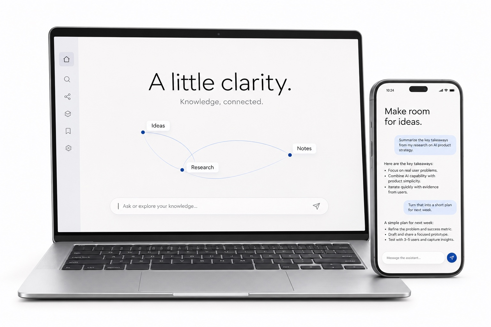

概念案例 · AI 知识管理
知序。
让收藏，
成为洞察。
把散落的信息，连接成可用的知识。

作品探索
从真实的问题出发，
探索 AI 产品的下一种可能。
概念案例 · AI 知识管理
把散落的信息，连接成可用的知识。
概念案例 · Agent 工作流
让重复工作流转，让关键决定留在人手中。
以上为产品概念探索，尚未代表已上线项目或经验证的成果。
关于我
走近真实场景，找到值得解决的需求。
能力之外，也关注理解、信任与掌控感。
用小步尝试，让反馈推动下一次迭代。
产品手记
记录思考，也给答案留一点空间。
一个值得探索的起点是：把能力清单换成用户任务。用户在什么场景遇到困难？现在如何解决？一次成功的结果是什么样子？
再把问题缩小到一个可验证的体验：让用户完成一件具体的事，观察哪些环节仍然需要解释、等待或返工。产品的价值，也许就藏在这些细节里。
可以先按任务影响与可逆性划分边界：低风险、容易撤回的步骤允许自主完成；涉及重要承诺的动作，则让用户看清结果并决定。
进一步要问的，是过程是否可理解、出错后是否可恢复，以及人能否随时接手。自主权应当服务于具体任务中的信任。
先写出最不确定的假设，再选择足以检验它的最小体验。例如，要验证用户是否理解某项功能，可以先用交互原型；要验证输出是否有用，则需要真实任务和有代表性的样本。
提前定义值得继续投入的信号，也记录哪些反馈会让方向改变。原型的完成，是下一轮学习的开始。
保持连接
关于 AI，关于产品，
或者一个还没成形的想法。
第青川 · AI 产品经理